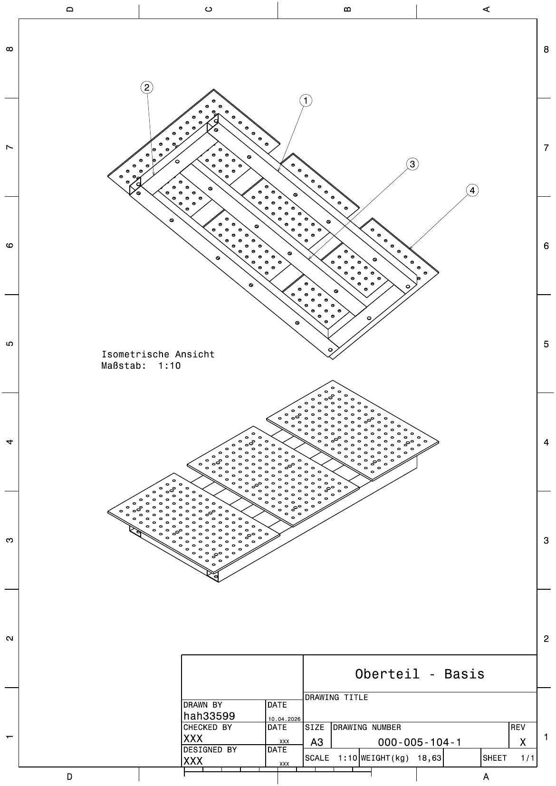

🔝 Oberteil 000-005-104

Isometrische Ansicht · zwei Darstellungen – oben der Rahmen mit teilweise abgehobenen Platten, unten der fertige Zusammenbau. Gewicht laut Schriftfeld: 18,63 kg.
Teileliste
| Teile-Nr. | Bauteil | Profil / Maß | Länge | Bearbeitung |
|---|---|---|---|---|
| 000-005-005-4 | 4-Kantrohr | 80 × 80 × 3 | 1500 mm | gebohrt |
| 000-005-005-3 | 4-Kantrohr | 80 × 80 × 3 | 1330 mm | gebohrt |
| 000-005-004-2 | 4-Kantrohr | 80 × 80 × 3 | 500 mm | gebohrt |
| 000-005-013-2 | Lochplatte D16 | 800 × 500 × 12 | – | gebohrt · 3× |
Wandstärke: Alle Vierkantrohre einheitlich 80 × 80 × 3 mm → ein Materialtyp für den gesamten oberen Rahmen.
🔥 Rahmenbau
Grundkonstruktion aus Vierkantrohren, zunächst miteinander verschweißt.
🔩 Verbindungstechnik
Platten werden mittels Schraubverbindungen fest mit den Vierkantrohren fixiert.
🎯 Vorbereitung
Für die Montage ist eine präzise Bohrung der Vierkantrohre erforderlich.
💡 Drei Lösungsmethoden für das Verschraubungsproblem
Verfahren: Durchgangsbohrung Ø12 mm mit zylindrischer Vertiefung Ø16 mm, Tiefe 10 mm. Ziel: vollständiges Versenken des Schraubenkopfes in der Platte → plane Oberfläche.
Verfahren: Einbringen von Innengewinden in die bestehenden Bohrungen. Ziel: kraftschlüssige Verbindung ohne zusätzliche Muttern oder Bauteile.
Verfahren: Fixierung eines Lochblechs mittels Schweißnähten unter der Hauptplatte. Ziel: vorhandene Bohrungen als Durchgangslöcher nutzen; Verschraubung im angeschweißten Hilfsblech.
🔽 Unterteil – Basis: 000-005-105
Teileliste
| Teile-Nr. | Bauteil | Profil / Maß | Länge | Funktion |
|---|---|---|---|---|
| 000-005-005-1 | 4-Kantrohr | 80 × 80 × 3 | 1500 mm | Längsstrebe Rahmen |
| 000-005-006-1 | 4-Kantrohr | 80 × 80 × 3 | 750 mm | Tischbein / Standhöhe |
| 000-005-004-1 | 4-Kantrohr | 80 × 80 × 3 | 500 mm | Querstrebe Rahmen |
| 000-005-012-2 | Platte | 120 × 120 × 10 | – | Adapterplatte für Lenkrollen · gebohrt |
Unterschied zum Oberteil: Hier sind die Rohre ungebohrt (reine Schweißkonstruktion) – nur die Adapterplatte 120×120×10 ist gebohrt.
🔥 Rahmenkonstruktion
Stabiler Grundkörper aus verschweißten Vierkantrohren.
🛞 Mobilität
Montage von Lenkrollen über angeschweißte Adapterplatten an der Unterseite.
🧰 Flexibilität
Modularer Aufbau bietet zusätzlichen Stauraum für Werkzeuge und Materialien.
Kurzfassung
- BaugruppeUntergestell des Schweißtischs (Beine + unterer Rahmen).
- Materialdurchgängig Vierkantrohr 80 × 80 × 3 mm.
- Verbindungvollständig geschweißt – keine Schraubverbindung nötig.
- Neu gegenüber der ersten ZeichnungAdapterplatte 120 × 120 × 10 statt Fußplatte 160 × 160 × 10 → für Lenkrollen statt Bodenverankerung.